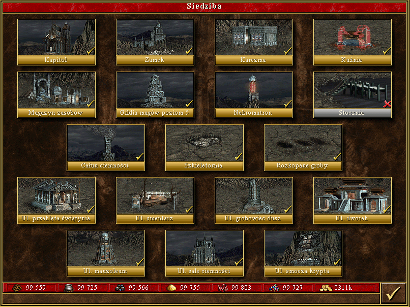

To miasto, które pojawiło się pierwszy raz w Heroes II i od tego czasu towarzyszy nam we wszystkich grach. Nekropolia ma swoich bardzo wiernych, ortodoksyjnych fanów, którzy czasem nawet grają tylko nią. W Heroes III oraz Might and Magic VII kraina nekromantów to Deyja - wymowa tej nazwy jest trudna do ustalenia, ale w jednym z oryginalnych dialogów pojawia się [dejżja]. Nie wiadomo, jakie są początki tego państwa i teoretycznie jest rządzone przez Gildię Nekromantów, choć przez pewien czas samowładzę objął Archibald Ironfist, dobry znajomy z Heroes II i MM VI. Nekromanci uchodzą za ucieleśnienie zła, magii ciemności i śmierci, ale jak sami o sobie twierdzą: "szukamy tylko wiedzy, a to chyba szlachetny cel". Sąsiadują z AvLee, a ich stolicą jest podziemna Czeluść. Nekropolia to miasto nieumarłych utrzymane w mrocznym klimacie. Początek gry może być nieco problematyczny, gdyż pierwsze trzy jednostki nie należą do najsilniejszych. Szkielety, gdy jeszcze nie przytłaczają liczebnością, są najzwyczajniej przeciętni. Ożywieńcy starają się o tytuł najwolniejszej jednostki, a zjawy są zupełnie niegroźne. Miasto pokazuje pazur dopiero od czwartego poziomu. Tu na scenę wkraczają wampiry, które po ulepszeniu stają się potężną bronią. Nekropolia, dzięki trzem jednostkom latającym, dobrze radzi sobie w walce przeciwko strzelcom oraz w przejmowaniu wrogich miast. Oczywiście parę słów należy poświęcić klasowemu talentowi bohaterów tej frakcji. Nekromancja - zdecydowanie jedna z najlepszych umiejętności w grze. Pozwala ona przywracać część istot poległych w walce do „życia” w formie szkieletów. To sprawia, że im dłuższa gra, tym bardziej niebezpieczna staje się Nekropolia. Taką strategię wspomagają dodatkowo świetne budynki specjalne: Nekromatron, Szkieletornia i Rozkopane groby. Jeśli chodzi o ekonomię, to do sprawnej rozbudowy potrzeba całego spektrum surowców z dodatkowym wskazaniem na rtęć. Gracz powinien skupić się na jak najszybszym zdobyciu wampirzych lordów i liszy.
[Źródło tekstu]
